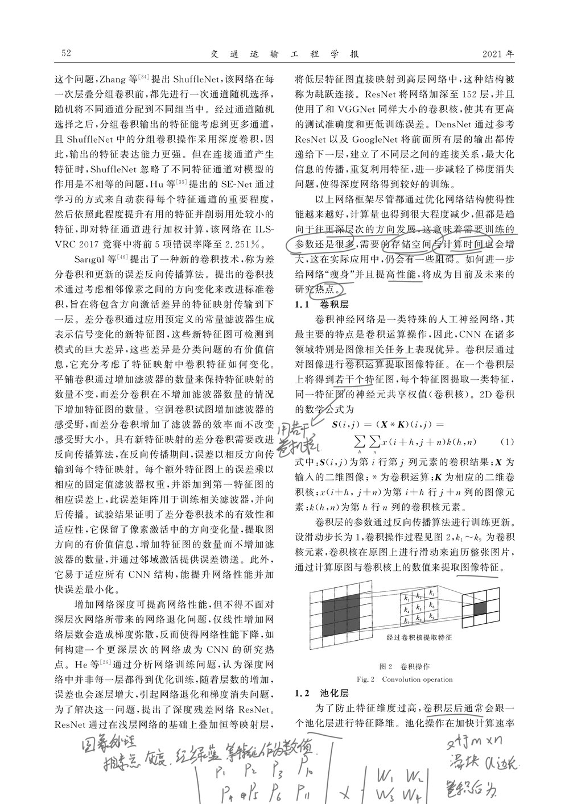
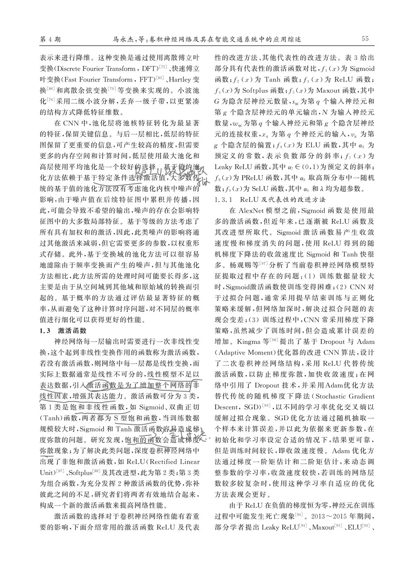
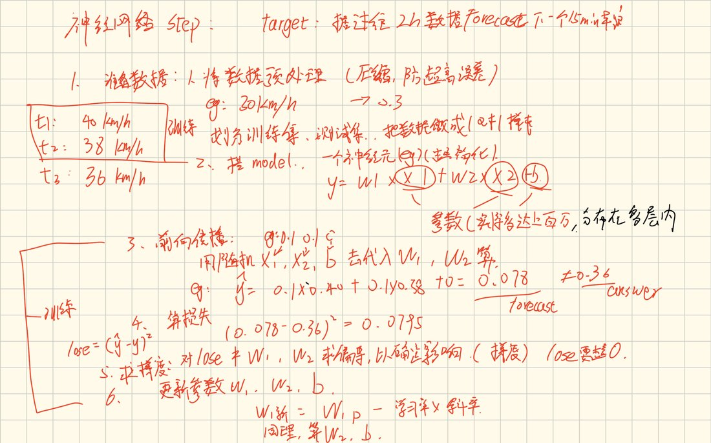
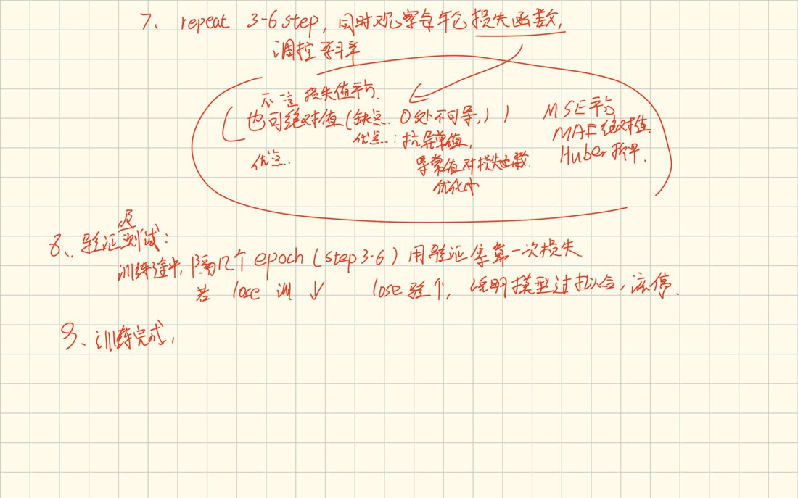
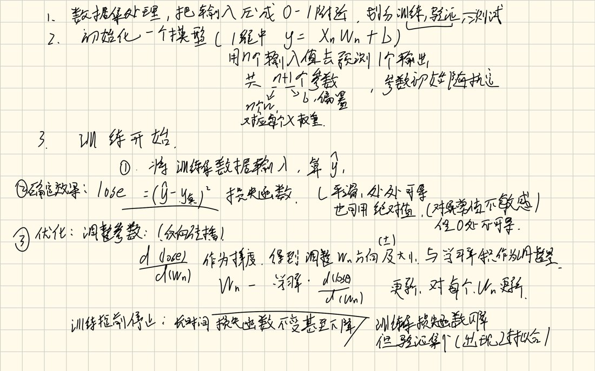
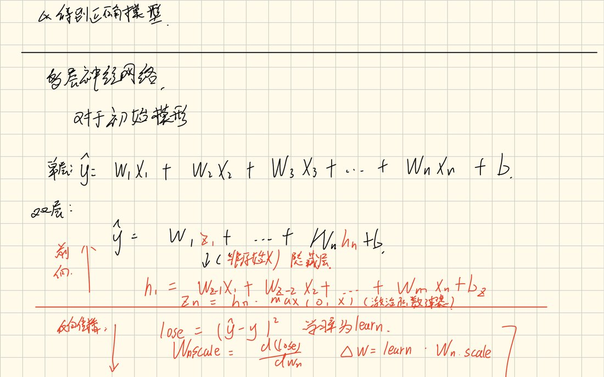
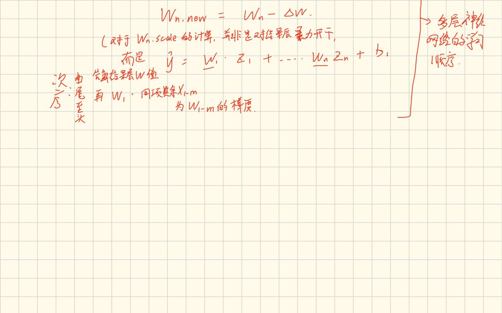
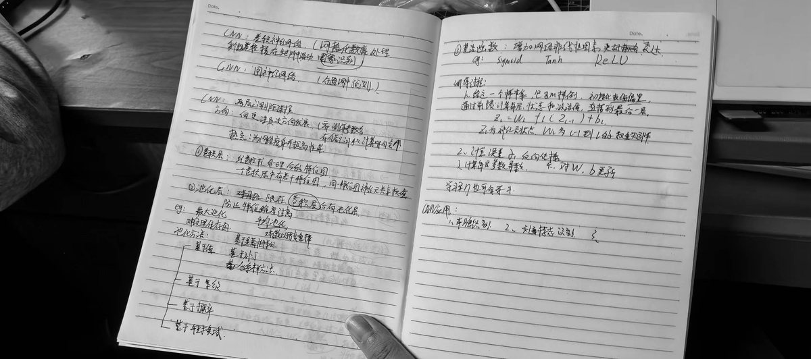

读到哪里
记了什么
这一周的材料都放在这里：读的文献、手写的推导、纸质本的整理。 文献只贴了读到的部分，后面没读的没有放。
文献
从第 48 页开始读，到第 56 页激活函数那一节停下。 这四页是读过的部分里比较关键的位置。




后面第 57 页往后是优化算法、批量归一化、智能交通应用和算法对比， 这周没读到。下周补田秀娟 2018 和 2025 年那篇信号交叉口的论文。
电子笔记
这五页是跟着课程整理的训练流程，从数据预处理一直推到参数更新。 和文献里的激活函数、池化那些正好接上。
目标是拿过去 2 小时的数据预测下一个 15 分钟均值。
六步分别是：数据预处理压到 0.3 附近、搭单神经元模型
y = w₁x₁ + w₂x₂ + b、前向传播、算损失、求梯度、更新参数。
每一步都代了具体数字，比如 0.1×0.40 + 0.1×0.38 = 0.078，
和真实值 0.36 差 0.0795。

第七步重复前六步并观察损失。中间比较了三种损失函数： MSE 取平方、MAE 取绝对值、Huber 折中。 第八步讲早停：训练集损失下降但验证集上升，就是过拟合，该停。

从数据预处理、初始化模型、训练开始三步写起，
把损失函数和反向传播的更新公式写全了：
wₙ ← wₙ − lr · ∂loss/∂wₙ。

第一层还是 ŷ = w₁x₁ + … + wₙxₙ + b，
第二层多了一组隐藏变量 h，中间过一道 max(0, x)。
这页就是后来代码里那 225 个参数的来源。


纸质笔记
纸质本上整理的是 CNN 的整体结构，和电子笔记的训练流程互补： 电子笔记讲怎么练，纸质笔记讲网络长什么样。

w = w - lr * dw；
然后是 ReLU 为什么用（计算快、避免梯度消失）、
池化为什么用（降维、减参、防过拟合）
TOOLING
AI 参与：本页的 HTML 结构与样式、PDF 页面渲染与图片压缩、纸质笔记的照片处理， 由 Claude 完成。
本人完成：文献阅读与圈注、电子笔记的书写、纸质本的整理。 文中所有笔记图片均来自本人原始材料，未作改写。